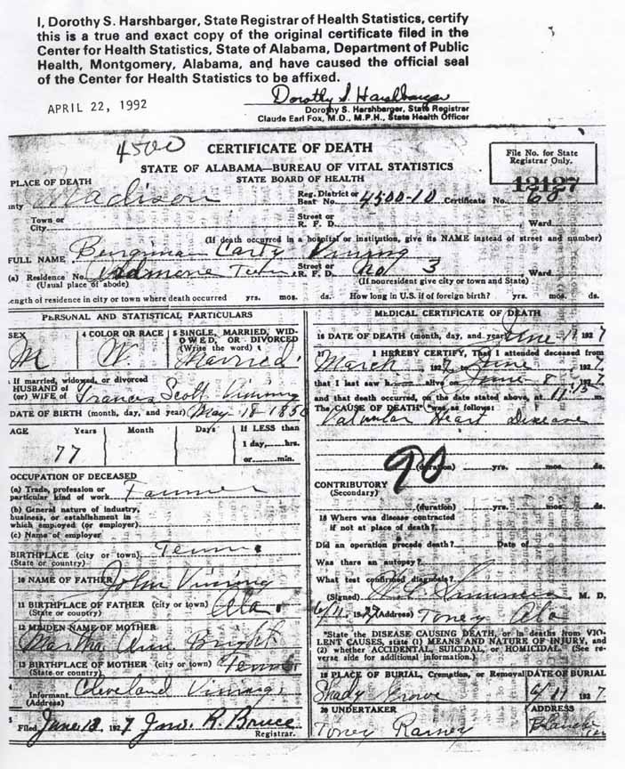

Census Data
| 1890 | 1900 | 1910 | 1920 | 1930 | 1940 | |
| Benjamin Carty Vining | ? | 50 | ? | ? | dead | |
| Frances (Scott) Vining | ? | 37 | ? | ? | ? | dead |
| Leland Scott Vining | ? | [living? in separate household] | ||||
| Joseph Alonzo Vining | ? | 16 | ? | ? | ? | ? |
| Rutherford Vining | ? | 14 | ? | ? | ? | ? |
| Vleveland Vining | ? | 11 | ? | ? | ? | ? |
| Annie Vining | 8 | ? | ? | ? | ? |

Death Data
Death certificate for Benjamin Carty Vining: